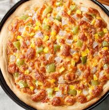

| 
|
Sausage PizzaIngredients
1 loaf (1 pound) frozen bread dough, thawed
3/4 pound bulk hot Italian sausage
1/2 cup sliced onion
1/2 cup sliced fresh mushrooms
1/2 cup chopped green pepper
1/2 cup pizza sauce
2 cups shredded part-skim mozzarella cheese
Directions
With greased fingers, pat dough onto an ungreased 12-in. pizza pan. Prick dough thoroughly with a fork. Bake at 400° for 10-12 minutes or until lightly browned.
Meanwhile, in a large skillet, cook the sausage, onion, mushrooms and green pepper over medium heat until sausage is no longer pink; drain.
Spread pizza sauce over crust. Top with sausage mixture; sprinkle with cheese. Bake at 400° for 12-15 minutes or until golden brown. Or wrap pizza and freeze for up to 2 months.
To use frozen pizza: Unwrap and place on a pizza pan; thaw in the refrigerator. Bake at 400° for 18-22 minutes or until golden brown.
|